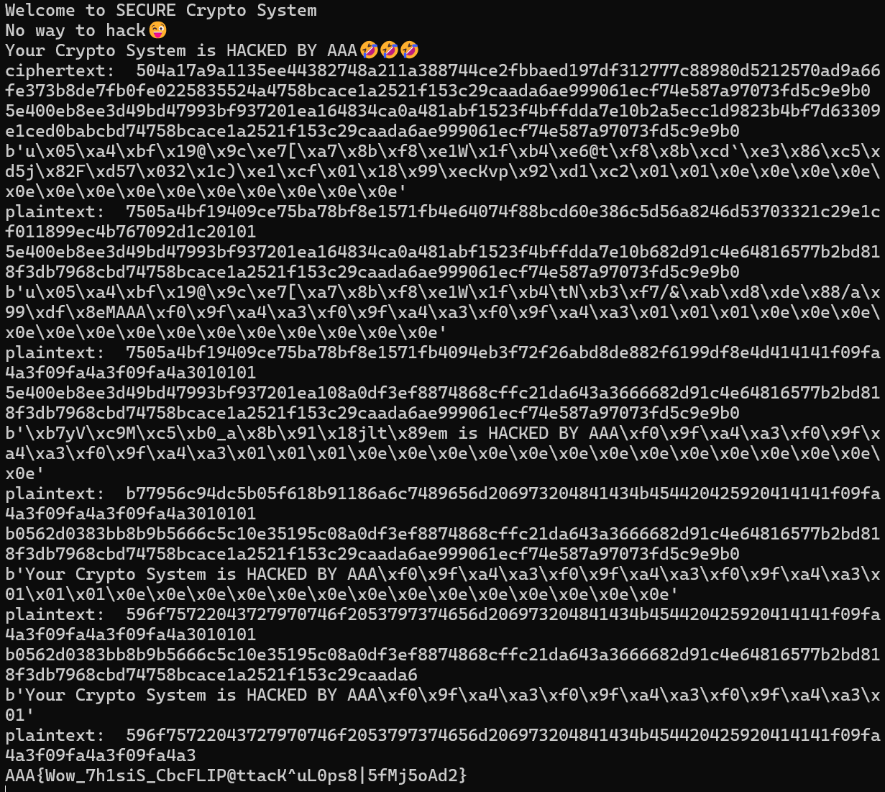
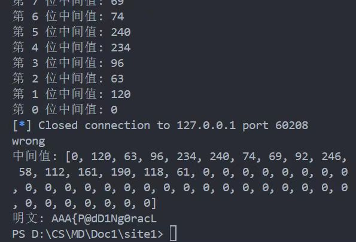
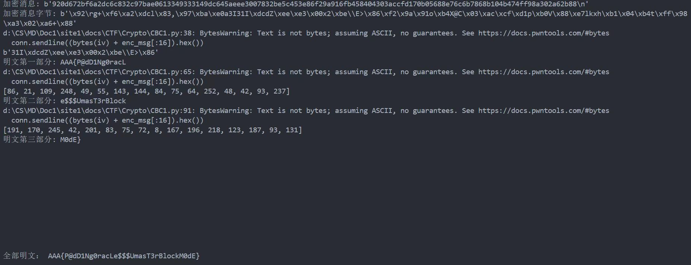
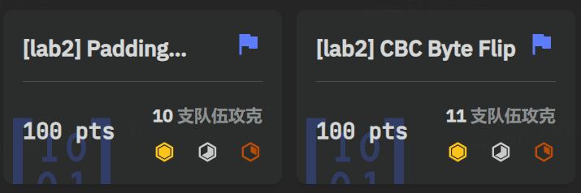
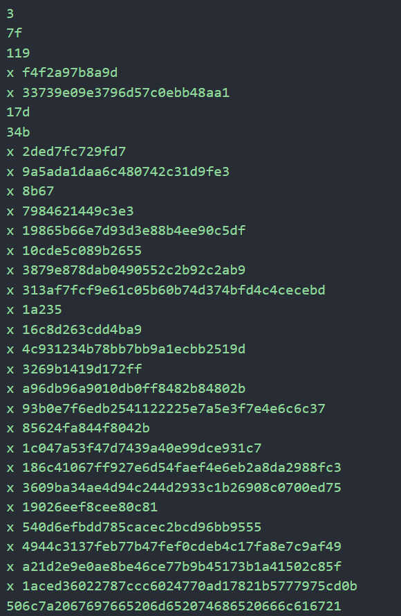
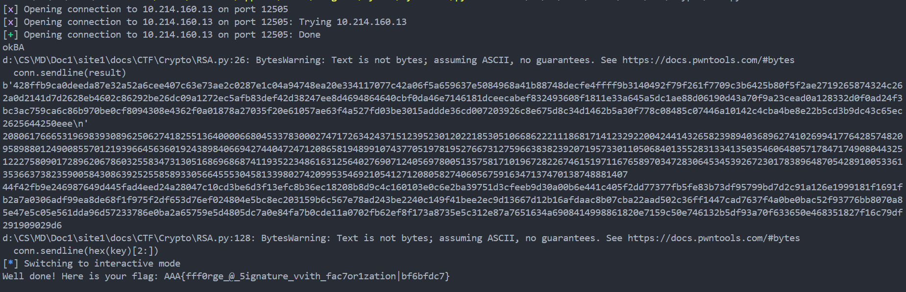
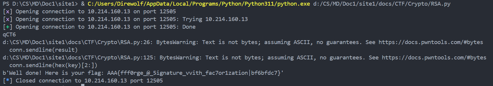
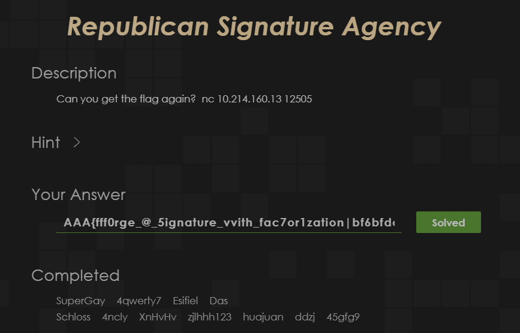

Crypto Lab 2¶
1. CBC Byte Flip¶
1.1. 题目特点¶
题目的载体是AES加密中的CBC模式，题目会给出一个50字节长度的字符串和对应的密文（前十六字节是IV），要求通过CBC字节翻转修改密文，使其解密出的明文变成另一个47字节的字符串。
在不触发程序错误的情况下，服务器可以不断地返回做题者输入的密文所对应的明文（有两个，分别是未取消padding和取消padding的明文），我们可以根据给出的明文进一步修正，直至得到与题目中要求一致的明文。
1.2. 思路¶
解决这道题的方法就在标题中，即CBC字节反转，其原理是通过修改前一个密块中的值，从而改变下一个密块解出的明文的值，其中IV字段可以看成是第0个密块。例如，修改IV的值，就能使紧邻的第一个密块解出的明文的值发生变化，同时后面的密块解出的明文也会不同。
| Python | |
|---|---|
如上面代码展示的，取出IV块，用异或运算来计算第一个原始明文块与预期明文块的差距，然后将这个差距和IV再做一次异或运算，就能修改IV块使得第一个明文块修改成我们想要的明文。以此类推，修改第一个密文块来修改第二个明文块，直至所有明文块都修改过一次。但此时会发现，除了最后一个明文块，前面修改过的明文块都变成了乱码，这是因为我们修改了这些明文块对应的密文块。此时只需要从后往前再计算一次就行，即从倒数第三个密文块开始，通过修改倒数第三个密文块来修改倒数第二个明文块，通过修改倒数第四个密文块来修改倒数第三个明文块，最后修改IV来修改第一个明文块。
在代码实现过程中还有一些需要注意的：
- 文本末尾的emoji表情每一个都对应着三个字节，可以通过在线的十六进制转换得到
- 目标文本是47字节，补位的字节值和距离下一个块所缺少的值一致，比如这里47字节，距离下一个16字节的整数倍差1，因此补1个\x01，同理差两个的话就补2个\x02
- 为了避免不必要的麻烦，可以把目标文本改成50字节，即补3个\x01，最后再删掉一个块即可
1.3. 实现¶
声明：为了调试方便，没有做全自动化（没有连接靶机和自动读取的操作），最后拿到flag了也没有改动，代码中保留的ciphertext和下面的图片一致。代码输出的前四个字符串分别从后往前地完成了明文块的修改，最后一个输出删掉了多余的块，如下图所示：

2. Padding Oracle¶
2.1. 题目特点¶
同样是CBC，同样是发送密文，但这次不返回明文，只返回三个状态：200表示密文对应的与明文一致，500表示padding错误，403表示padding正确但不是明文。这么看来返回的信息量比之前的题目少了很多，需要的爆破次数大幅增加，必须要用全自动交互了。
服务器只在最开始给我们密文，密文所对应的明文就是flag，找到明文就解出了flag。
2.2. 思路¶
根据我在第一题里提到的padding规则，离完整的密文块缺n个，就补n个十六进制的n。以IV为例，修改IV的最后一个字节，从0x00遍历到0xff，其中会有一个在解密后使得第一个明文块的最后一个字节为0x01，也就是正确的padding，此时返回403（padding正确但不是明文），这个时候我们就可以通过此时IV的最后一个字节与0x01进行异或得到这个位置对应的中间值（即代码中的intermediate_bytes）。下一个操作就是想办法让明文块的最后两个字节都是0x02，即下一个padding，此时IV的最后一个字节是中间值的最后一个字节和0x02异或后的结果，这样能保证最后一个字节解出来的明文一定是0x02，只需要遍历IV块的倒数第二个字节来使明文块的倒数第二个字节也是0x02即可。将以上规则遍历整个IV块就能得到第一个明文块的全部内容了。部分代码如下：
这里为了测试代码逻辑是否正确，如果遍历完一个字节还没有答案就说明写错了，实际使用可以删掉。enc_msg已经把IV剔除了，这里是纯密文块。intermediate_bytes并不是明文，想要得到明文，还需要将中间值和真正的IV做异或才能得到，即：
| Python | |
|---|---|

将以上的部分复制粘贴略作修改，就能得到完整的明文了。
2.3. 实现¶
为方便调试，输出了每一个阶段的明文和对应的中间值，最后再写一句代码把三部分都合起来就得到了flag。

前两题的通过截图：

3. Republican Signature Agency¶
3.1. 题目特点¶
连接服务器端口，先要做一个小小的pow，找到哈希值后六位与给定的相同的字符串。听助教说是防止服务器被爆破的手段。
通过pow后，有四个选项，0展示说明，1对输入的明文进行RSA数字签名，2是验证签名解密后是否是给定字符串，3是退出。
本题需要我们伪造数字签名，使其明文和要求的字符串一致。
3.2. 思路¶
RSA是一个安全性很高的算法，直接爆破不太现实。
但是题目能给任意给定字符串的hex返回签名，大可利用一番。
根据RSA选择明文爆破的思路，输入2，4，3，9分别得到c2，c4，c3，c9，可以根据 n=gcd(c2*c2-c4,c3*c3-c9)来得到n（原理略）。这里得到的n也有一定的概率会出错，但是我们总能多次爆破，总有一次的n恰好是给定值。注意，程序限定了输入的类型是hex，且不小于两个字节，实际真正输入的是0002，0004，0003，0009。
仅仅知道n并不能得到数字签名，我们要诱导服务器帮我们生成签名的一部分。服务器并不能直接生成我们需要的签名，因为限定输入字符串的hex不能大于15个字节，但是我们可以组合签名。
利用RSA的乘法同态的特性，可以组合出需要的结果。例如，给定的字符串的数值为X，能找到X=X1X2，那么X对应的密文C=(C1C2)%n（原理略）。据此我们只需要找到若干个子字符串，长度小于等于15（小于2字节补0即可），其乘积为X，就能得到数字签名了。
3.3. 实现¶
具体实现时遇到了不少阻力：
- 明文转数字并质因数分解后为：117539425503417846151799038508858073088368534710049 (51 digits) = 3 × 127 × 281 × 269323062708893 × 4076418121333894008279720561313 (31 digits)，这五个质数并不能通过简单组合的形式来生成在ASCII码范围内的字符串，不能通过简单的乘法来解决。打x代表无法表示为字符串，因为ASCII码在0x00到0x7f之间。

解决思路：将不能用字符串表示的质数成倍增加，直至能够用字符串表示为止，以下代码能够实现这一功能。
根据以上代码，最终构造了以下组合形式：
| Python | |
|---|---|
这么处理需要使用模意义的除法，即求逆，直接调包使用inverse()函数就行。
将以上实现写入代码，最后完成执行得到以下截图：

上面的代码输出了较多的调试用的中间量，以下为修改后的flag纯享版：（忽略一点点warnings和前面的pow）

通过截图：
